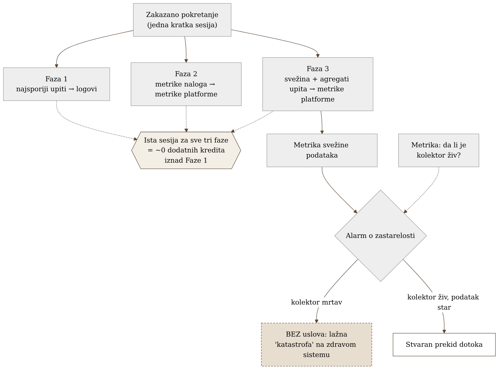
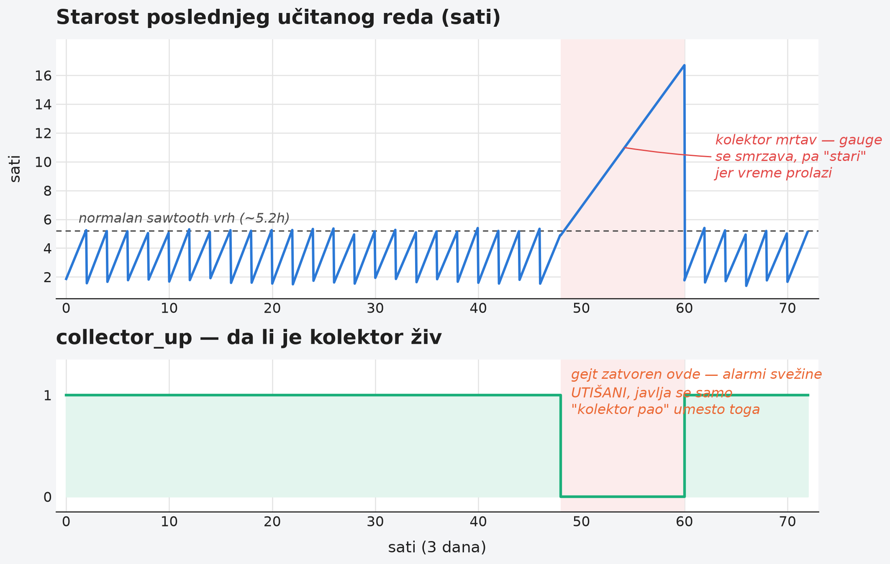

Poglavlje 24 — Posmatranje servisa koji nije naš (tipa Snowflake)
Kad restoran unajmi spoljnog dobavljača hrane za veliki događaj, šef kuhinje tog restorana ne može da uđe u dobavljačevu kuhinju, ne može da proveri temperaturu njihove rerne, ne može da stoji pored njihovog kuvara i gleda kako se priprema jelo. Sve što šef kuhinje ima je ono što dobavljač sam odluči da mu pokaže: račun na kraju, isporučena količina, i, ako je dobavljač uredan, izveštaj o tome šta je poslato i kada. Ništa od toga nije uživo — račun stiže sutradan, izveštaj kasni sat ili dva. A ako dobavljač prestane da šalje izveštaje, to ne znači nužno da je hrana prestala da stiže — možda je samo administrativna osoba koja piše izveštaje otišla na odmor. Šef kuhinje koji to ne razlikuje bi mogao da pomisli da je čitav događaj propao, dok je hrana, u stvari, stizala savršeno na vreme — samo izveštaj o njoj nije.
24.1 Pitanje na koje ovo poglavlje odgovara
Poslednja domenska studija slučaja u ovom delu knjige razlikuje se od svih prethodnih na jedan fundamentalan način: nema hosta na koji se agent instalira, nema procesa kom se pristupa, nema mreže koja se posmatra iz sopstvene infrastrukture. Servis je potpuno tuđ — u oblaku dobavljača, upravljan isključivo od strane tog dobavljača. Šta uopšte znači "posmatrati" nešto kad nemamo nijedan od uobičajenih alata za to?
24.2 Kako je to urađeno — praktičan pregled
Nula posmatranja kao polazna tačka
Pre nego što je ovaj rad počeo, spoljni servis za analitičko skladištenje podataka koji implementacija koristi nije imao apsolutno nijedan oblik posmatranja — nijednu metriku, nijedan log, nijedan alarm. Sve što je postojalo bio je mesečni račun i, povremeno, subjektivan utisak korisnika da su pojedini upiti "spori." Ovo je vredna polazna tačka za poglavlje — razlikuje ga od svih prethodnih studija slučaja, gde je neka forma posmatranja već postojala i unapređivana.
Tri faze, jedna zajednička sesija
Rešenje je izgrađeno u tri odvojene faze, svaka pokrivajući drugačiji cilj, ali sve tri dele istu sesiju prema spoljnom servisu — svaka faza se izvršava unutar istog zakazanog, kratkotrajnog pokretanja, umesto da svaka otvara sopstvenu, novu sesiju:
- Prva faza — pregled najsporijih upita, isporučen kao pretraživi log-zapisi, sa poveznicom nazad na alat za dijagnostiku samog servisa za svaki upit.
- Druga faza — metrike na nivou naloga: potrošeni krediti, opterećenje po logičkoj radnoj jedinici, prostor za skladištenje, uspešnost prijava.
- Treća faza — svežina podataka (koliko je star poslednji učitan red u svakoj ključnoj tabeli) i agregirani pokazatelji performansi upita po radnoj jedinici.
Deljenje jedne sesije između sve tri faze nije samo tehnička pogodnost — to je bila direktna odluka o trošku: pošto spoljni servis naplaćuje po minimalnom vremenu aktivacije radne jedinice, svaka dodatna, odvojena sesija bi značila dodatnu naplatu tog minimuma. Spajanjem sve tri faze u jedno pokretanje, druga i treća faza koštaju praktično nula dodatnih kredita iznad onoga što bi prva faza sama koštala.
Strukturno kašnjenje, ne greška u dizajnu
Implementacija eksplicitno dokumentuje da ništa u ovom sistemu nije, niti je ikad bilo namenjeno da bude, u realnom vremenu. Podaci koje spoljni servis izlaže o sopstvenoj upotrebi kasne od četrdesetak minuta do nekoliko sati, u zavisnosti od toga koji tip podatka se posmatra — ovo kašnjenje je objavljeno svojstvo samog servisa, ne posledica ičega u implementaciji. Praktična posledica: prag za "podatak nije stigao na vreme" mora biti postavljen sa svesnom rezervom iznad ovog objavljenog kašnjenja, jer bi prag postavljen preblizu stvarnom kašnjenju stalno lažno alarmirao na potpuno zdravom sistemu.
Alarm koji zavisi od zdravlja sopstvenog kolektora
Najvažnija lekcija ove implementacije, otkrivena i ispravljena tek posle prvobitnog puštanja u rad: alarm koji prati svežinu podataka mora biti eksplicitno uslovljen time da je sam mehanizam prikupljanja živ, ne samo time da li je posmatrana vrednost postala stara. Prvobitna verzija ovog alarma je posmatrala samo starost same metrike svežine — a kada je mehanizam prikupljanja jednom prestao da radi (bez ijedne greške u samom pozivu, samo tiho nije stigao do kraja), metrika svežine je zamrzla na poslednjoj vrednosti dok je vreme nastavilo da prolazi, što je prag za starost neizbežno prekoračilo i pokrenulo lažan, kritičan alarm o navodnom potpunom prekidu dotoka podataka — na sistemu koji je u stvarnosti bio potpuno zdrav. Popravka je bila da se alarm o svežini podataka eksplicitno uslovi zasebnom metrikom "da li je kolektor uopšte živ": bez tog uslova, mrtav kolektor izgleda identično kao katastrofalan prekid dotoka podataka sa spoljnog servisa — dva potpuno različita problema, ista lažna slika.
Otkriveno tek pošto je neko prvi put pogledao
Sam čin uvođenja posmatranja otkrio je probleme koji su postojali mesecima, potpuno nevidljivi dok niko nije imao razlog da ih traži: nekoliko privremenih, "prelaznih" tabela — ostatak rutinskih mesečnih i godišnjih obnova podataka — nikad nije obrisano posle završetka posla za koji su napravljene, ukupno nekoliko terabajta neaktivnog prostora koji se i dalje naplaćuje svakog meseca. Odvojeno, otkriveno je da tri različita radna okruženja — razvojno, testno i produkciono — dele isti identitet i istu lozinku za pristup spoljnom servisu, upisanu direktno kao obična, nešifrovana promenljiva okruženja. Praktična posledica ovog drugog nalaza je ozbiljna: curenje kredencijala iz najmanje osetljivog, gotovo neaktivnog razvojnog okruženja bi u tom trenutku bilo identično curenju produkcionog kredencijala — jer su, tehnički, isti. Oba nalaza su prijavljena vlasnicima podataka na dalju odluku; posmatranje ih je samo učinilo vidljivim, ne i rešilo.


24.3 Analitički deo — posmatranje bez pristupa infrastrukturi kao poseban problem
Servis sam razlikuje dva različita oblika sopstvene posmatranosti
Zvanična dokumentacija spoljnog servisa pravi jasnu razliku između dva potpuno odvojena problema: instrumentacija koda koji se izvršava unutar servisa (uskladištene procedure, korisnički definisane funkcije) naspram posmatranja kako se sam servis kao celina koristi (potrošnja, upiti, opterećenje, prijave). Prvi problem servis rešava sopstvenim mehanizmom tragova i događaja, ugrađenim u platformu. Drugi problem — onaj kojim se ovo poglavlje bavi — servis rešava isključivo kroz sopstvene, upitljive poglede na istoriju upotrebe. Implementacija je ispravno prepoznala da je njen slučaj isključivo ovaj drugi: servis se koristi kao skladište, ne kao platforma na kojoj se izvršava sopstveni kod, pa prvi mehanizam jednostavno nema šta da posmatra u ovom slučaju.
Objavljeno kašnjenje je zvanično dokumentovano, po pogledu, ne pretpostavka
Zvanična dokumentacija svakog pojedinačnog upitljivog pogleda koji implementacija koristi navodi eksplicitnu, brojčanu vrednost očekivanog kašnjenja — od četrdesetak minuta do nekoliko sati, u zavisnosti od konkretnog pogleda — sa napomenom da su ove vrednosti "približne" i da stvarno kašnjenje ponekad može biti manje. Ovo je direktna potvrda da implementacija nije proizvoljno pretpostavila kašnjenje, nego ga je preuzela iz objavljene specifikacije samog servisa — princip koji bi trebalo primeniti na svaki spoljni servis čije unutrašnje stanje se posmatra samo kroz njegov sopstveni izloženi API, ne kroz direktan pristup.
Obrazac "mrtav kolektor izgleda kao katastrofa" je poznat, imenovan problem u praćenju crne kutije
Šira literatura o posmatranju sistema bez direktnog pristupa hostu — kroz periodično ispitivanje tuđeg izloženog API-ja, uobičajen obrazac za bilo koji spoljni, upravljan servis — tretira nejasnoću "nema novih podataka" kao dobro poznat, ponavljajući problem: takav alarm po definiciji izgleda identično bilo da je uzvodni servis stvarno utihnuo, bilo da je sam mehanizam prikupljanja prestao da radi. Standardna, preporučena popravka je tačno ona koju je implementacija primenila tek posle prvog lažnog alarma — učiniti alarm o zastarelosti uslovljenim nezavisno proverenim zdravljem samog kolektora, a ne tretirati "stara metrika" i "tih uzvodni servis" kao isti signal.
Podešavanje minimalnog vremena aktivacije nema univerzalnu vrednost
I zvanična dokumentacija spoljnog servisa i nezavisni komentari o kontroli troška u oblaku odbacuju postojanje jedne univerzalne "ispravne" vrednosti za minimalno vreme aktivacije radne jedinice — umesto toga, oba izvora ga tretiraju kao kompromis specifičan za radno opterećenje, između brzine gašenja (manje traćenje kredita dok je jedinica neaktivna) i očuvane toplote keša (brže sledeće izvršavanje ako jedinica ostane aktivna malo duže). Zvanična preporuka ide dalje i eksplicitno upozorava na neusklađenu vrednost — predugo zadržavanje aktivnosti za jedinicu koja se koristi retko troši kredite bez ijedne koristi od keša. Ovo potvrđuje da izbor implementacije da zadrži agresivno kratko vreme aktivacije za zakazan, periodičan posao — gde nema koristi od toplog keša između pokretanja koja su satima razdvojena — nije proizvoljan, nego usklađen sa sopstvenom logikom radnog opterećenja.
Kontrafaktički scenario: šta bi ostalo nevidljivo bez ovog rada
Zamislimo da je odluka bila "nemamo pristup infrastrukturi, pa nema šta da se posmatra" — validan, ali pogrešan zaključak. Nekoliko terabajta neiskorišćenih, zaboravljenih tabela bi nastavilo da se naplaćuje neograničeno, jer niko ne bi imao razlog da ih traži bez sistematskog pregleda upotrebe po tabeli. Deljen, nešifrovan kredencijal između tri okruženja bi ostao neotkriven sve dok, u najgorem slučaju, curenje iz najmanje čuvanog okruženja ne postane stvaran bezbednosni incident u produkciji. Oba nalaza su postojala pre ovog rada, potpuno nevidljiva — posmatranje ih nije stvorilo, samo je prvi put omogućilo da budu viđeni.
Vratimo se restoranu i njegovom spoljnom dobavljaču s početka poglavlja. Šef kuhinje nikad neće moći da uđe u tuđu kuhinju — ali može tražiti bolji izveštaj, upoređivati ga iz nedelje u nedelju, i primetiti kad nešto u tom izveštaju ne štima, čak i preko one uobičajene, prihvaćene kašnjenja od jednog dana. Posmatranje servisa koji nije naš nikad neće biti isto kao posmatranje sopstvene infrastrukture — ali odsustvo pristupa hostu nije isto što i odsustvo mogućnosti da se nešto sazna. Vraćamo se i na pitanje postavljeno mnogo ranije u ovoj knjizi: šta uopšte znači "posmatrati" nešto — i odgovor, potvrđen ovde na najtežem mogućem primeru, ostaje isti. Posmatranje nikad nije bilo o direktnom pristupu. Uvek je bilo o tome da se postavi pravo pitanje i pronađe bilo koji pouzdan put do odgovora, čak i kad taj put vodi kroz tuđ, zakasneli izveštaj.
24.4 Skupljena pravila iz ovog poglavlja
- Kad servis nema host ni proces kom se može pristupiti, potraži sopstvene, upitljive poglede na istoriju upotrebe koje servis sam izlaže — to je jedini dostupan izvor istine, i skoro svaki ozbiljan spoljni servis ga ima u nekom obliku.
- Preuzmi objavljeno kašnjenje direktno iz zvanične specifikacije servisa, po svakom pojedinačnom izvoru podataka — ne pretpostavljaj jedinstvenu vrednost kašnjenja za ceo servis odjednom.
- Uslovi svaki alarm o zastarelosti podataka nezavisnom proverom da je sam mehanizam prikupljanja živ — bez tog uslova, mrtav kolektor i stvaran prekid dotoka izgledaju identično, i lažno će pokrenuti najozbiljniju moguću uzbunu.
- Kad naplata zavisi od minimalnog vremena aktivacije, spoji sve faze prikupljanja u jednu zajedničku sesiju umesto da svaka otvara sopstvenu — razlika u trošku može biti ogromna za posao koji inače ne bi ni primetio da deli infrastrukturu.
- Očekuj da će sam čin uvođenja posmatranja otkriti probleme koji nemaju nikakve veze sa observability-jem — zaboravljene resurse, deljene kredencijale — jer niko pre toga nije imao razlog, ni alat, da ih potraži.
24.5 Vežba za čitaoca
Nabroj spoljne, upravljane servise koje tvoj sistem koristi, a nad kojima nemaš nikakav pristup hostu ili procesu — servis za plaćanje, servis za slanje email-a, spoljni skladišni sloj podataka, bilo šta u tuđem oblaku. Za jedan od njih, pronađi da li taj servis izlaže sopstveni pogled na istoriju upotrebe koji bi mogao da se redovno ispituje. Ako postoji, a niko ga trenutno ne koristi — to je praznina koju ovo poglavlje traži da zatvoriš.
Izvori korišćeni u analitičkom delu
- Account Usage — Snowflake Documentation
- QUERY_HISTORY view — Snowflake Documentation
- WAREHOUSE_METERING_HISTORY view — Snowflake Documentation
- Optimizing the warehouse cache — Snowflake Documentation
- Observability in Snowflake: A New Era with Snowflake Trail — Snowflake Blog
- How to setup a Prometheus dead man's switch